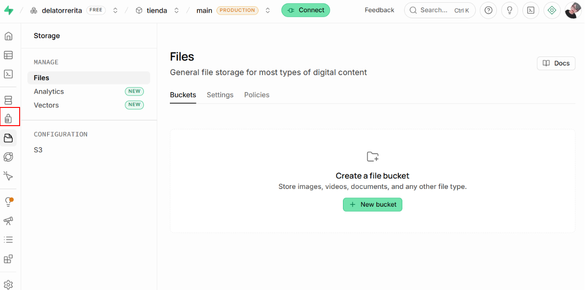
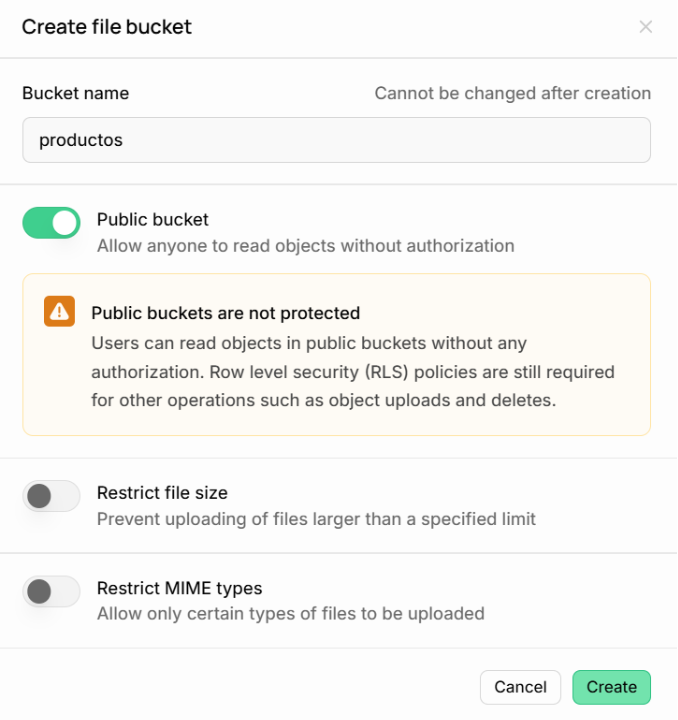

Para guardar imágenes en Supabase y vincularlas a la base de datos, no se recomienda almacenar directamente las mismas en una tabla como datos binarios, por razones de peso y velocidad, sino subir el archivo a Supabase Storage y guardar únicamente la URL pública o la ruta (path) en la base de datos.
Flujo de Trabajo
Crear un Bucket: Configura un espacio de almacenamiento en Supabase (ej. avatars o product-images).
Subir el Archivo (Storage): Se sube la imagen al bucket recién creado.
Obtener la URL: Copiar la URL pública del archivo subido.
Guardar la URL en el registro de la tabla de la Base de Datos: Insertas un registro en la tabla de tu base de datos guardando esa URL en una columna de tipo text.
1. Crear un Bucket en Supabase Storage:
Entrar al Panel de Control de Supabase y luego en la sección Storage.

Hacer clic en + New bucket.
Darle un nombre (ejemplo: productos).
Marcar la opción Public si se desea que las imágenes se puedan ver mediante una URL directa.

Subir la imagen con la SDK ( Software Development Kit ) de Supabase:
2. Obtener la URL: Copiar la URL pública del archivo subido.